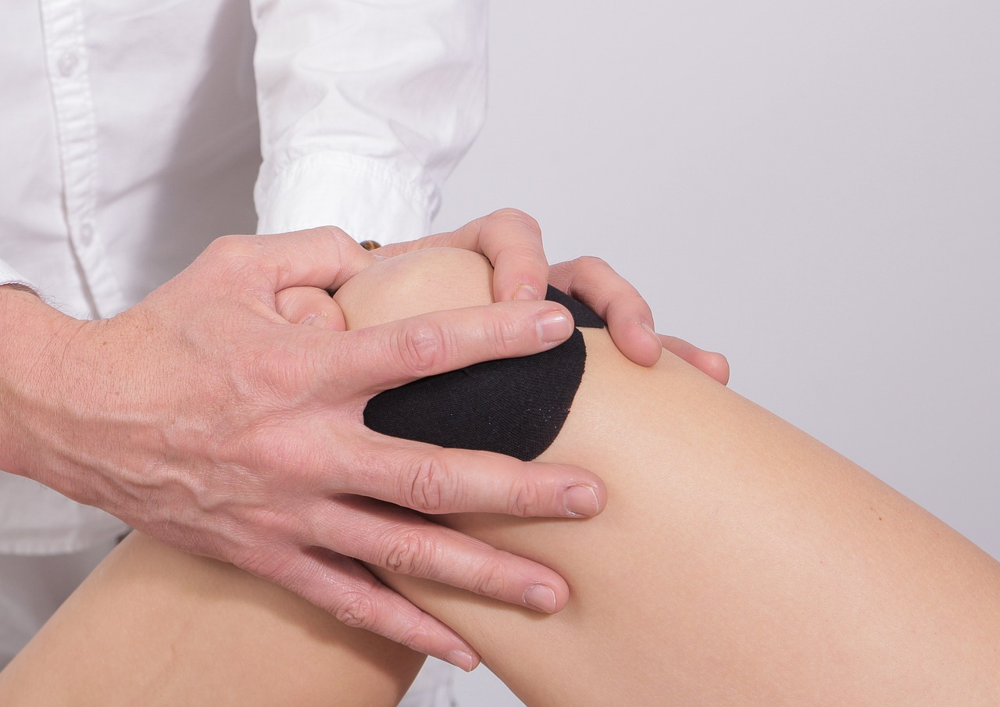
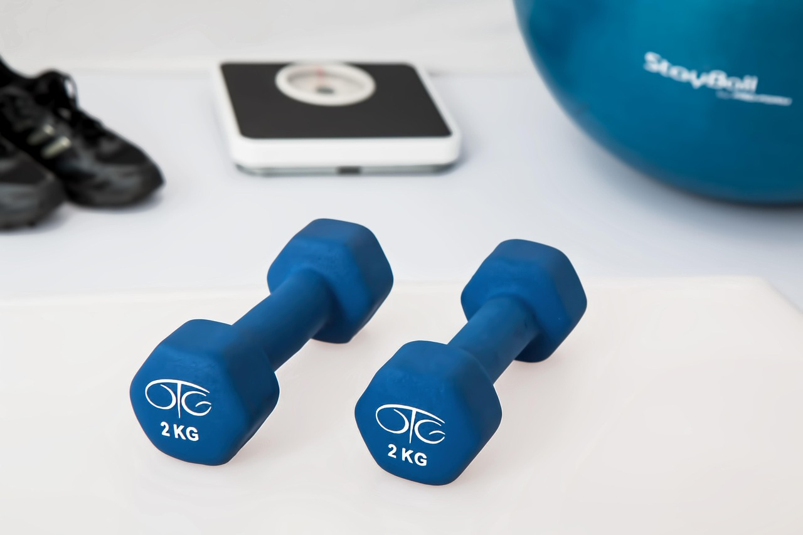

Fisioterapia
Atendimento de fisioterapia com foco em prevenção e reabilitação funcional, como diz o próprio nome da empresa.

Fisioterapia em Campina Grande
Clínica de fisioterapia no Edifício Styllus, na Rua Vigário Calixto, em Campina Grande.
Foto ilustrativa (Pixabay). No site final entram as fotos da clínica.
Atendimento
Esta prévia usa só informações públicas da clínica. No site final, a Fisio2fit escolhe os tratamentos que quer destacar.
Atendimento de fisioterapia com foco em prevenção e reabilitação funcional, como diz o próprio nome da empresa.
Fale pelo (83) 99193-6767 para marcar uma avaliação e tirar dúvidas sobre horários.
A clínica atende pela manhã de segunda a sexta e também à tarde às terças, quartas e sextas.

A clínica
A Fisio2fit — Centro de Prevenção e Reabilitação Funcional fica no Edifício Styllus, na Rua Vigário Calixto, 2158, no Catolé, em Campina Grande.
O contato publicado no Google é o (83) 99193-6767 e o e-mail fisio2fit@gmail.com.
Não incluímos preços, convênios nem depoimentos: só dados públicos. As fotos desta prévia são ilustrativas, de banco de imagens gratuito.
Quando ir
Horários publicados no perfil da clínica no Google.
A clínica fica no Catolé, um dos bairros mais movimentados de Campina Grande, perto do eixo da Rua Vigário Calixto.
Onde estamos
Edifício Styllus · R. Vigário Calixto, 2158, sala 103 · Catolé, Campina Grande - PB, 58410-340
Dúvidas
Confirme com a clínica pelo WhatsApp; a equipe orienta sobre a avaliação inicial.
Pela manhã de segunda a sexta (7h às 11h) e à tarde às terças, quartas e sextas (14h às 17h), conforme o Google.
Edifício Styllus · R. Vigário Calixto, 2158, sala 103 · Catolé, Campina Grande - PB, 58410-340. Veja o mapa nesta página ou peça a localização pelo WhatsApp.
Chame no WhatsApp, conte o que você está sentindo e combine o melhor horário para a sua avaliação.